Her dakika, doğru göreve yazılır.
Stuxio dersleri ve projeleri alanlara, yapılacakları görevlere ayırır. Kronometreyi bir göreve bağlarsın; geçen süre o göreve ve alana işlenir. Bağlantı kesilse bile saat durmaz.
- AlanHer seans bir alana bağlı açılır ve o alanın renginde görünür.
- ModSerbest, Klasik 25+5, Derin 50+10, Özel. Dördü de ücretsiz planda.
- BaşlatSeans başlar; süre arka planda da doğru ölçülür.
- ModSeçili mod her an görünür — burada Özel.
- SüreOdak modunda ekranda yalnızca süre kalır. Mola ve süre sonu bildirimle gelir.
- Duraklat · BitirSeansı bitirmek hiçbir planda internet gerektirmez.
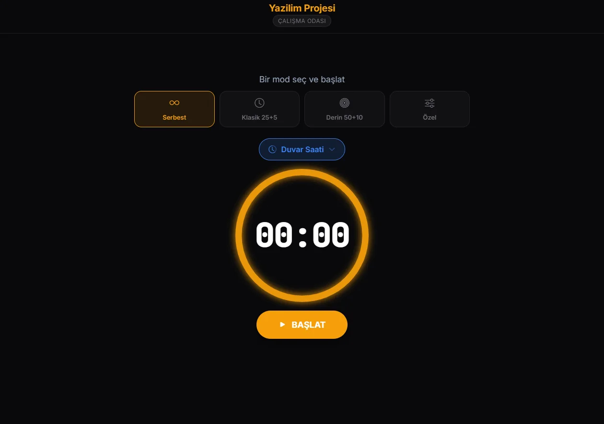
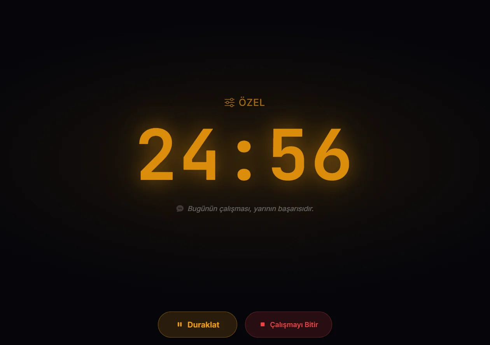
- 4 mod — hepsi ücretsiz planda
- Bağlantısız süre tutar, sonra eşitler
- iPhone, Android, Windows — tek hesap
- AB'de barındırılır — Frankfurt
Dört ayrı araç yerine tek bir kayıt zinciri.
Görevler bir not uygulamasında, kronometre başka birinde, plan takvimde. Ne kadar çalıştığın ise hiçbir yerde. Stuxio bu parçaları birbirine bağlar; sonunda ne kadar çalıştığını tahmin etmen gerekmez.
Her ders ya da proje için bir alan.
Okul, iş ve kişisel gelişim ayrı durur; her alanın kendi rengi ve kategorisi var.
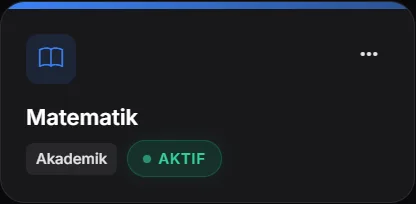
Alanın altında görevler.
Tahmini süre, başlangıç ve hedef bitiş. Görevler takvime yerleşir, hatırlatma kurulur.
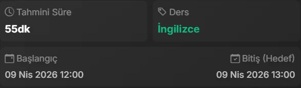
Kronometre göreve bağlanır.
Bir mod seç ve başlat. Süre, seçtiğin göreve sayılır.
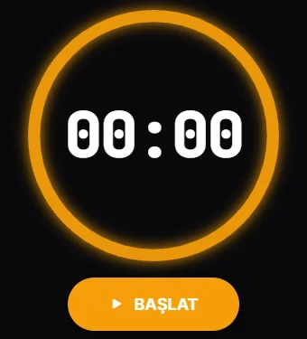
Süre yerine işlenir.
Hangi görev ne kadar sürdü, planlanan ile gerçekleşen arasında ne fark var — kendiliğinden.
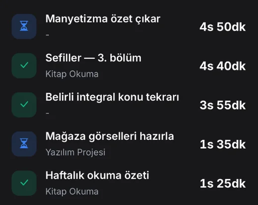
Odak modunda ekranda yalnızca süre kalır.
Bildirim sayısı, menü, istatistik — hiçbiri. Mola bitimleri ve süre sonu bildirimle haber verilir; geri kalan her şey seans bitene kadar bekler.
Dört mod da ücretsiz planda. Kilitli bir kronometre modu yok.
- Renk
- Çalışma odası, seansın bağlı olduğu alanın renginde açılır
- Arka plan
- Uygulamadan çıksan da süre doğru ölçülür; kapatıp açınca kaybolmaz
- Bildirim
- Mola bitimi ve süre sonu — ekrana bakman gerekmez
Her ders ya da proje için ayrı bir alan.
Çalışma alanı aç, altına görevlerini yaz, önceliklendir ve tamamla. Görevler takvim üzerinde planlanır; hangisinin ne kadar sürdüğünü sonradan görürsün.
- Alan
- 3 ücretsiz · Sınırsız Premium
- Alan başına görev
- 7 ücretsiz · Sınırsız Premium
- Takvim
- Görevler güne yerleşir; ay görünümü
- Hatırlatma
- Uygulama kapalıyken de çalışır
- Karşılaştırma
- Planlanan ve gerçekleşen süre
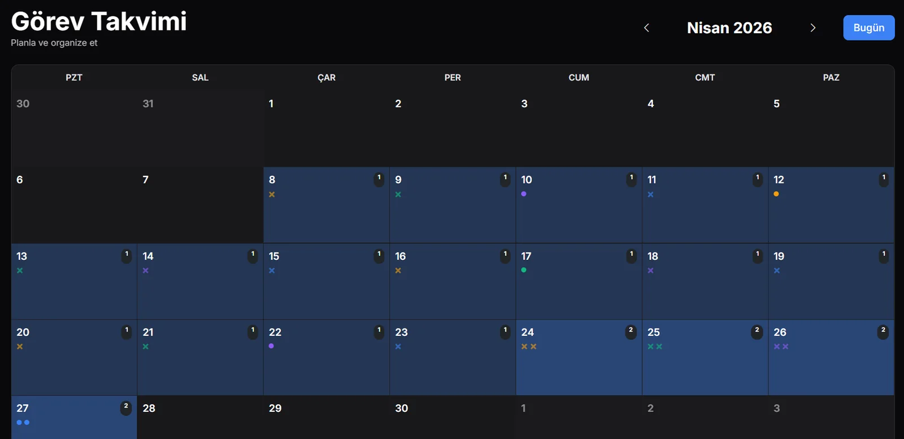
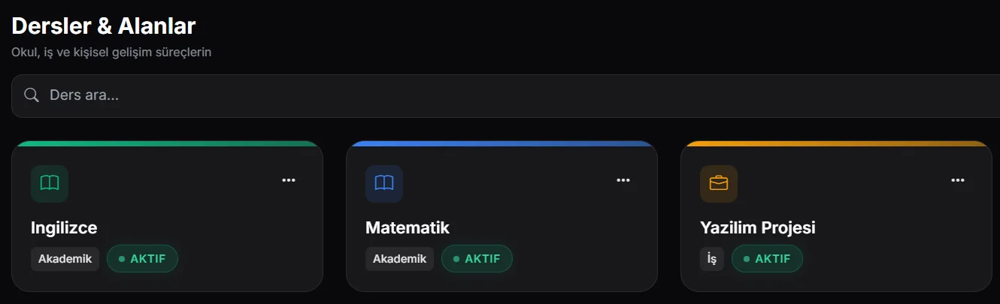
Süre nereye gitti, hangi saatte daha verimlisin?
Rakamlar tahmine değil, gerçekten tuttuğun süreye dayanır. Her ölçü senin seanslarından hesaplanır; hiçbiri elle girilmez.
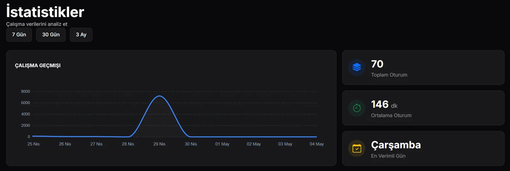
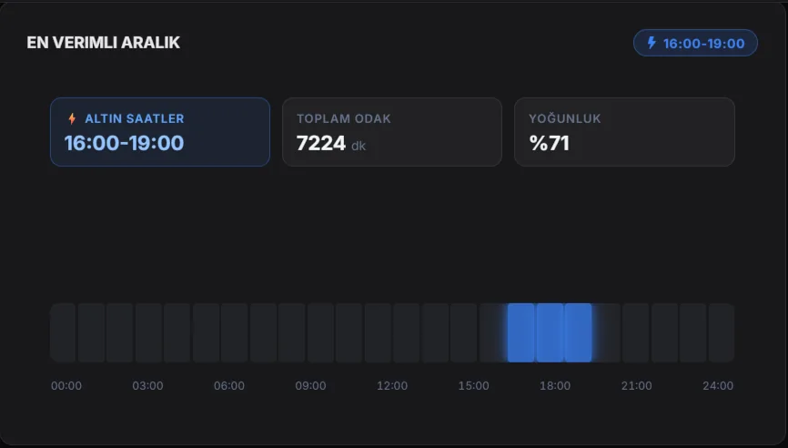
- Çalışma geçmişiGünlük ve aylık süre grafiği; toplam, ortalama ve en yüksek dönem.
- Ders dağılımıSürenin alanlara göre kırılımı.
- En verimli aralıkGünün hangi saatlerinde en yoğun odaklandığın; toplam odak ve yoğunluk.
- En uzun süren görevlerİlk beş görev, harcanan süreye göre.
- Verimlilik skoruBugünü geçen haftanın aynı günüyle karşılaştırır.
- Seri ve rozetlerGünlük seri takibi; üst üste çalıştığın günler.
- PDF Odak Raporu PremiumSeçtiğin aralığı belge olarak dışa aktar.
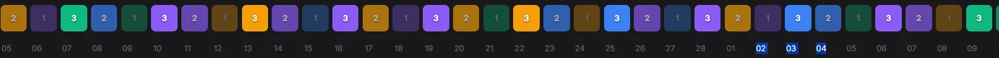
Aynı hesap, telefonda ve masaüstünde.
Windows uygulaması telefondakinin büyütülmüşü değil; geniş ekranın alanını kullanır. Telefonda başladığın oturumu masaüstünde görürsün.
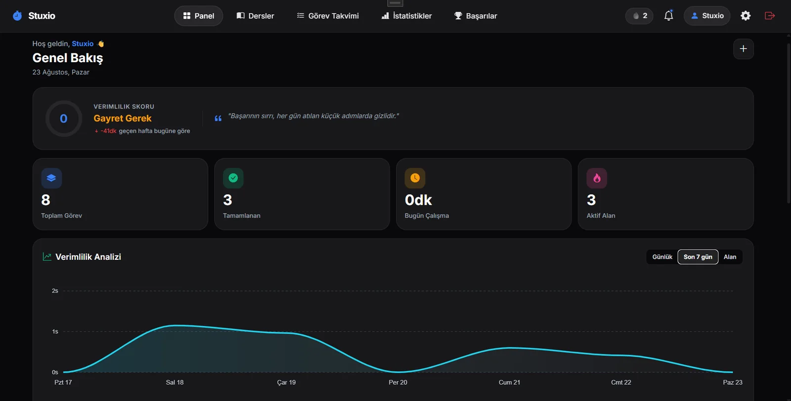
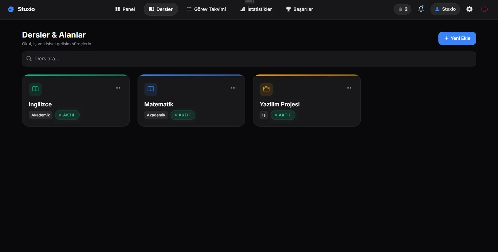
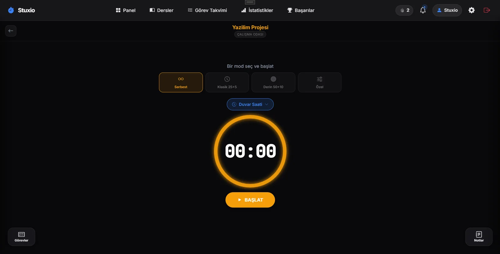
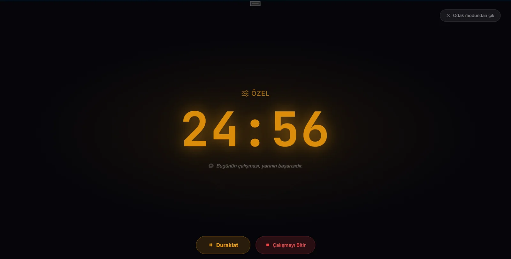
- 1 telefon + 1 masaüstüAynı anda açık kalabilir.
- Önce onay istenirAynı türden ikinci cihazda diğer oturum kapanır.
- Masaüstü Premium ileTelefon uygulaması her planda.
- .NET MAUIPlatformlarda aynı arayüz.
- Türkçe · English · DeutschUygulamanın tamamı.
Bağlantı kesilir. Saat durmaz.
Çevrimdışı çalışmak sonradan eklenmiş bir özellik değil, baştan verilmiş bir karar. Wi-Fi kesilse de, metroda da kronometre sürer.
Bağlantı varken
Kayıtlar cihazda tutulur ve sunucuyla eşitlenir.
Bağlantı yokken
Süre cihazın saatinden hesaplanır; uygulamayı kapatıp açsan bile kaybolmaz. Değişiklikler cihazda sıraya alınır.
Bağlantı gelince
Sıradaki değişiklikler kendiliğinden eşitlenir. Senin bir şey yapman gerekmez.
Ücretsiz planda çevrimdışıyken yeni ders/görev oluşturma kapalıdır; çalışma oturumları her planda açıktır.
Birlikte çalış, yalnız süreyi paylaş.
Arkadaşlarınla bir çalışma grubu kur. Katılmak için uygulamada Gruplar bölümüne altı karakterlik kodu girmen ya da davet bağlantısını açman yeterli.
- +Günlük çalışma süresi
- +Ortak günlük hedef grupta varsa
- +Şu an çalışıyor mu kapatabilirsin
- ·Ders adları
- ·Görevler
- ·Notlar
Verilerin sana ait.
Çalışma verisi kişiseldir. Stuxio, çalışmanı anlamana yardım etmek için tasarlandı — çalışmanı bir ürüne çevirmek için değil.
Reklam yok
Reklam ağı, davranışsal izleme veya pazarlama analitiği kullanılmıyor.
Verilerin satılmaz
Pazarlama amacıyla üçüncü taraflarla paylaşılmaz.
Avrupa Birliği'nde barındırılır
Hesabın ve çalışma verilerin Frankfurt'taki bir PostgreSQL veritabanında tutulur.
Yalnızca çökme takibi
Çökmeleri görebilmek için bir hata takip hizmeti (Sentry) kullanılır; kayıtlar adın veya e-postanla ilişkilendirilmez.
Hesabını kendin silersin
Uygulama içinden kalıcı silme; ayrıntısı hesap ve veri silme sayfasında.
Çalışma sürene dokunulmaz
Harcanmış bir çalışma süresi hiçbir planda silinmez.
Gizlilik Politikası → Kullanım Koşulları → Hesap ve veri silme →
Ücretsiz başla. Hazır olduğunda büyüt.
Ücretsiz plan kalıcıdır ve süre sınırı yoktur. Aşağıdaki farklar uygulamada birebir geçerlidir.
| Özellik | ÜcretsizKalıcı olarak 0 ₺ | PremiumStuxio'nun tamamı |
|---|---|---|
| Çalışma | ||
| Çalışma oturumu | Sınırsız | Sınırsız |
| Kronometre modları | Dördü de | Dördü de |
| Odak modu, bildirimler, oyunlaştırma | Var | Var |
| Düzen | ||
| Çalışma alanı | 3 | Sınırsız |
| Alan başına görev | 7 | Sınırsız |
| Çevrimdışıyken ders/görev düzenleme | Yok | Tam düzenleme |
| Analiz | ||
| İstatistik aralığı | 7 gün | 7 gün, 30 gün, 3 ay |
| PDF Odak Raporu | Yok | Var |
| Platform | ||
| iPhone ve Android | Var | Var |
| Masaüstü uygulaması | Yok | Telefonla eşzamanlı |
Çalışma sürene dokunulmaz. Kronometreyi çevrimdışı durdurmak hiçbir planda engellenmez. Harcanmış bir çalışma süresini bağlantı yok diye silmek özellik kısıtı değil, veri kaybı olurdu.
Güncel fiyat Google Play ve Microsoft Store sayfalarında görünür.
Ücretsiz indir
Daha fazla araç değil, daha az dağınıklık.
Stuxio'nun amacı çalışma hayatını daha karmaşık hale getirmek değil. Tam tersi: daha fazla uygulama arasında gidip gelmek zorunda kalmadan daha düzenli çalışabilmek.
Bu yüzden çevrimdışı çalışmak bir "ek özellik" değil, baştan verilmiş bir karar. Bu yüzden ücretsiz planda kronometre modlarının hiçbiri kilitli değil. Ve bu yüzden harcadığın süreye, bağlantın yok diye dokunulmuyor.
Sık sorulanlar
Cevabı burada yoksa support@stuxio.net — gelen her mesajı geliştiren kişi okuyor. Sorun giderme için Destek.
Stuxio tam olarak ne yapıyor?
Çalışma alanlarını, görevleri, odak kronometresini ve çalışma istatistiklerini tek uygulamada birleştirir. Bir alan açar, altına görevlerini yazar, kronometreyi o göreve bağlarsın; harcadığın süre doğrudan ilgili göreve ve alana işlenir.
İnternet olmadan gerçekten çalışıyor mu?
Evet. Kronometre cihazın saatinden hesaplandığı için bağlantı olmadan da doğru sürer ve uygulama kapatılıp açılsa bile süre kaybolmaz. Kayıtlar cihazda saklanır, bağlantı gelince sunucuyla eşitlenir. Ücretsiz planda çevrimdışıyken yeni ders/görev oluşturma kapalıdır; çalışma oturumları her planda açıktır.
Ücretsiz mi, Premium ne getiriyor?
Ücretsiz plan kalıcıdır ve süre sınırı yoktur: sınırsız çalışma oturumu, tüm kronometre modları, odak modu, bildirimler, 3 çalışma alanı, alan başına 7 görev ve 7 günlük istatistik. Premium; sınırsız alan ve görev, 30 gün ile 3 aylık istatistik aralıkları, çevrimdışıyken tam düzenleme ve masaüstü uygulaması ekler.
Verilerim güvende mi, reklam veya izleme var mı?
Reklam ağı, davranışsal izleme veya pazarlama analitiği kullanılmıyor ve verilerin satılmıyor. Yalnızca uygulamanın çökmelerini tespit edebilmek için bir hata takip hizmeti (Sentry) kullanılıyor; bu kayıtlar adın veya e-posta adresinle ilişkilendirilmez. Ayrıntı için Gizlilik Politikası.
Verilerim nerede tutuluyor?
Hesabın ve çalışma verilerin Avrupa Birliği'nde (Frankfurt) barındırılan bir PostgreSQL veritabanında, cihazındaki kopya ise uygulamanın kendi yerel deposunda tutulur.
Hangi cihazlarda çalışıyor?
iPhone (App Store), Android (Google Play) ve Windows (Microsoft Store). Uygulama .NET MAUI tabanlıdır ve platformlarda aynı arayüzü kullanır. Türkçe, İngilizce ve Almanca dil desteği vardır.
Aynı hesabı hem telefonda hem bilgisayarda kullanabilir miyim?
Evet — aynı anda bir telefon ve bir masaüstü oturumu açık kalabilir. Aynı türden ikinci bir cihazdan giriş yapılırsa önce onay istenir, onaylarsan diğer cihazdaki oturum kapanır. Masaüstü uygulaması Premium gerektirir.
Hesabımı nasıl silerim?
Uygulama içinden Profil ekranındaki “Hesabı sil” adımıyla ya da bize e-posta göndererek. Süreç ve silinen veriler: Hesap ve veri silme.
İlk seansın 00:00'dan başlar.
Bir alan aç, bir görev yaz, başlat. Gerisini Stuxio tutar.
Bir sorun mu var, bir fikrin mi? support@stuxio.net — gelen her mesajı geliştiren kişi okuyor.